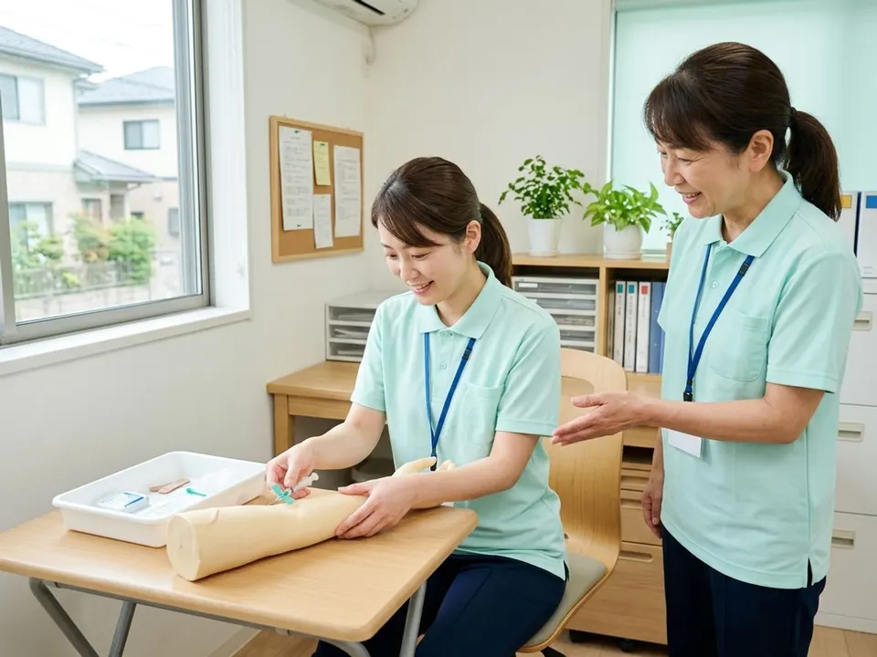
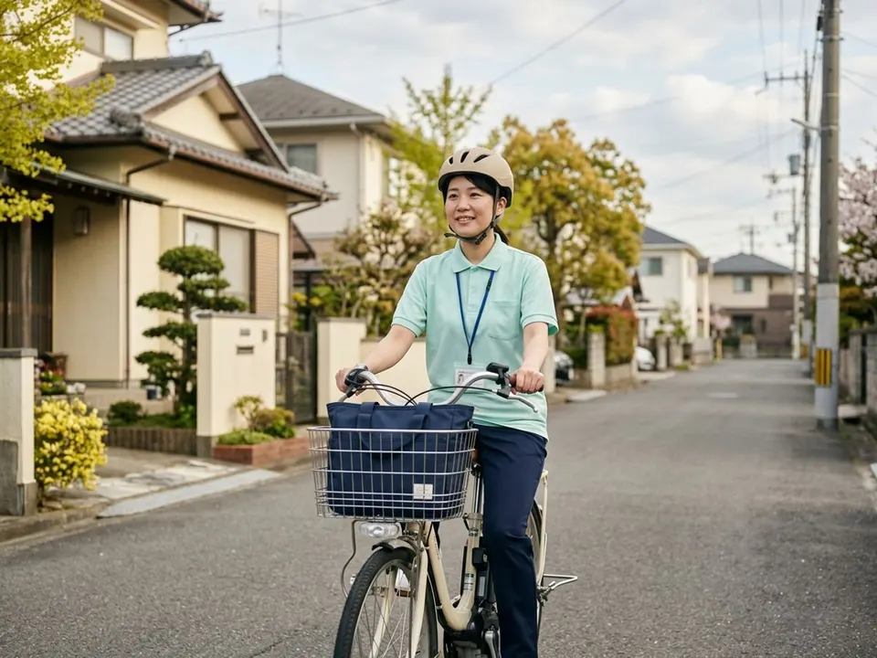
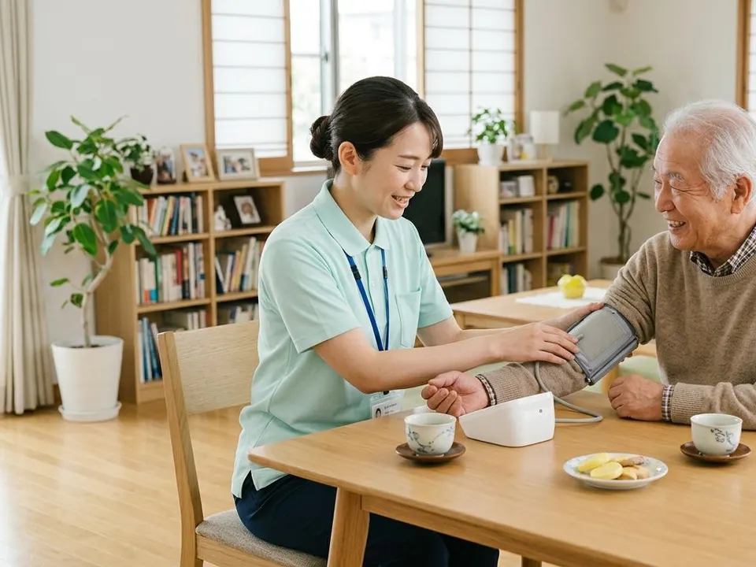

3か月の同行訪問から
最初の3か月は、先輩と2人で訪問します。ひとりで回るのは、本人と管理者が「大丈夫」と思えてから。ひとりで訪問するようになってからも、迷ったときは事業所に電話で相談できる体制にしています。
看護師 募集中（常勤・パート）
病棟の経験は、おうちでもっと生きる。
はじめての訪問看護でも、3か月の同行訪問からスタートできます。

看護師12名中 10名が
病院・クリニックから転職
あてはまるものを押すと、ひよりでの答えが光ります
スタッフ
14名看護師12・理学療法士2
有休取得率
92%残業（月平均）
3.5時間子育て中のスタッフ
6名1日の訪問
4〜5件病院・クリニックから転職
10名看護師12名中
平均年齢
38歳訪問先まで
15分圏内2026年10月時点（架空の数字です）
不安をひとつずつ、仕組みで減らしています
最初の3か月は、先輩と2人で訪問します。ひとりで回るのは、本人と管理者が「大丈夫」と思えてから。ひとりで訪問するようになってからも、迷ったときは事業所に電話で相談できる体制にしています。
オンコールの担当は希望者だけ、月4回まで。1回3,000円の手当に、出動したときは出動手当がつきます。夜の電話の多くは、ご家族からの相談だけで終わります。

採血・点滴・在宅で使う医療機器の扱いを、事業所で練習してから現場へ出ます。ブランクのあとに復職した先輩が4名います。わからないことは、何度でも聞いてください。

パートは9〜16時・週3日から。訪問先へ直接行って直接帰る「直行直帰」もできます。子どもの急な発熱などで休むときは、チームで訪問を振り分けます。

働き方を選ぶと、月収の目安が出ます
（JavaScript を有効にすると、条件を変えて計算できます）
※ 架空の人物です。写真はイメージです
病棟では、退院したあとの暮らしが見えませんでした。今は、その人の台所や庭の話をしながら看護ができます。「家に帰れてよかった」と言われた日のことは、ずっと覚えています。
採血の練習から付き合ってもらえたので、怖さがなくなりました。16時に上がれるので、保育園のお迎えにも間に合います。子どもの熱で休むときも、気持ちよく送り出してもらえます。
オンコールの回数を自分で決められるので、無理がありません。夜の電話は、ご家族からの相談で終わることが多いです。困ったときに相談できる人がいるのは心強いです。
訪問看護は、ひとりで判断する仕事だと思われがちです。ひよりでは「迷ったら電話する・帰ってきたら話す」をいちばん大切にしています。まずは見学で、私たちの雰囲気を見に来てください。
| 雇用形態 | 正社員（試用期間3か月・期間中の条件は同じ） |
|---|---|
| 募集人数 | 2名 |
| 仕事内容 | ご自宅への訪問看護（健康状態の確認、医療処置、リハビリ、ご家族への助言など） |
| 給与 | 月給31万円〜35万円（訪問手当3万円を含む。経験により決定） 別途オンコール手当 1回3,000円・出動手当 賞与 年2回 |
| 勤務時間 | 8:45〜17:30（休憩60分） |
| 休日 | 土日祝・年末年始（年間休日125日）、有給休暇 |
| 資格 | 看護師・准看護師 普通自動車免許（AT限定可。自転車だけで回るエリアもあります） |
| 待遇 | 社会保険完備、交通費全額支給、電動自転車・社用車の貸与、資格取得の支援 |
| 勤務地 | ひより訪問看護ステーション（架空） 架空市ひより町2-3-4（ひより駅から徒歩8分） |
| 受動喫煙対策 | 屋内禁煙 |
| 運営 | 株式会社ひよりケア（架空） |
| 雇用形態 | パート（試用期間3か月・期間中の条件は同じ） |
|---|---|
| 募集人数 | 2名 |
| 仕事内容 | ご自宅への訪問看護（健康状態の確認、医療処置、リハビリ、ご家族への助言など） |
| 給与 | 時給1,900円〜2,150円＋訪問手当 オンコールは希望する方のみ |
| 勤務時間 | 9:00〜16:00の間で相談（週3日・1日5時間から） |
| 休日 | 土日祝・年末年始。シフトは月ごとに相談 |
| 資格 | 看護師・准看護師 普通自動車免許（AT限定可。自転車だけで回るエリアもあります） |
| 待遇 | 交通費全額支給、電動自転車の貸与、条件を満たす方は社会保険に加入 |
| 勤務地 | ひより訪問看護ステーション（架空） 架空市ひより町2-3-4（ひより駅から徒歩8分） |
| 受動喫煙対策 | 屋内禁煙 |
| 運営 | 株式会社ひよりケア（架空） |
はい。今いる看護師12名のうち10名が、病院やクリニックからの転職です。最初の3か月は先輩と同行で訪問し、ひとりで回る時期は本人と相談して決めます。
事業所から近いエリアは、電動自転車で回っています。車で回る場合も、最初は先輩が運転する車で道を覚えてもらいます。
月に1〜2回ほどです（担当が月4回の場合）。夜の電話の多くは、ご家族の相談を聞いてアドバイスするだけで終わります。オンコールを担当しない働き方もできます。
もちろんです。応募するかどうかは、見学のあとにゆっくり決めてください。服装も普段着で大丈夫です。
その日の訪問は、ほかのスタッフで振り分けます。子育て中のスタッフが6名いるので、お互いさまの雰囲気です。
見学だけでも歓迎です。2営業日以内に、お電話でご連絡します
2営業日以内に、お電話でご連絡します。
（デモのため、実際には送信されていません）